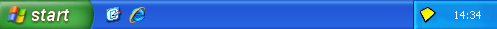

Sandboxie Control
Overview
Sandboxie Control is the graphical front end to Sandboxie, and can control most aspects of Sandboxie. These are some of the things that you can do with it:
- Start and stop programs under the supervision of Sandboxie
- View files inside the sandbox
- Recover desired files out of the sandbox
- Delete the contents of sandboxes, purging all undesired files
- Create, remove and configure sandboxes
Menus
-
Main Menu:
-
See Also: Tray Icon Menu
Visibility
Sandboxie is primarily a mechanism to run other programs, not an interactive tool. You will typically hide the main window of Sandboxie Control, and the program will only be visible as a tray icon in your system notification area, typically at the lower-right corner of the screen:

(Note the yellow Sandboxie Control icon near the clock.)
To toggle the hidden state, double-click the tray icon, or right-click it and select the Show Window or Hide Window commands. (See Tray Icon Menu.) Additionally, you can hide the window by clicking the close button (X) at the upper-right corner of the window.
To quit Sandboxie Control and remove its tray icon from the system notification area, right-click the tray icon and select Exit.
Views
Quick Links to More Topics
Go to Help Topics.